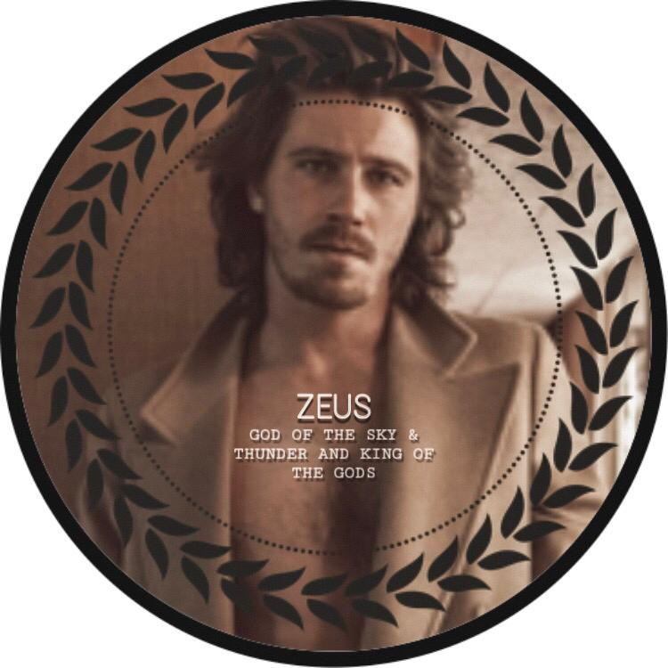
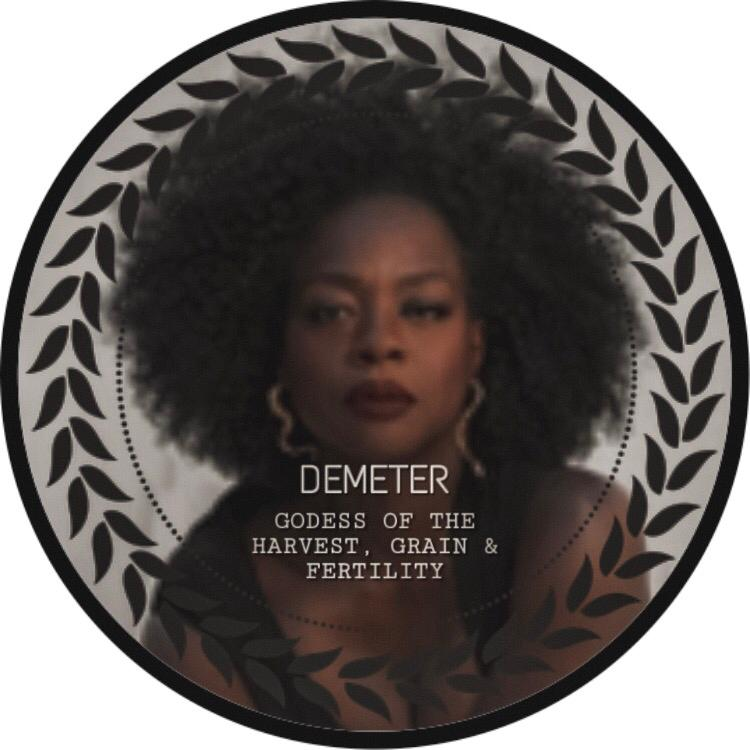
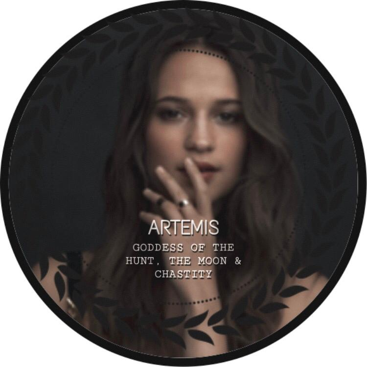
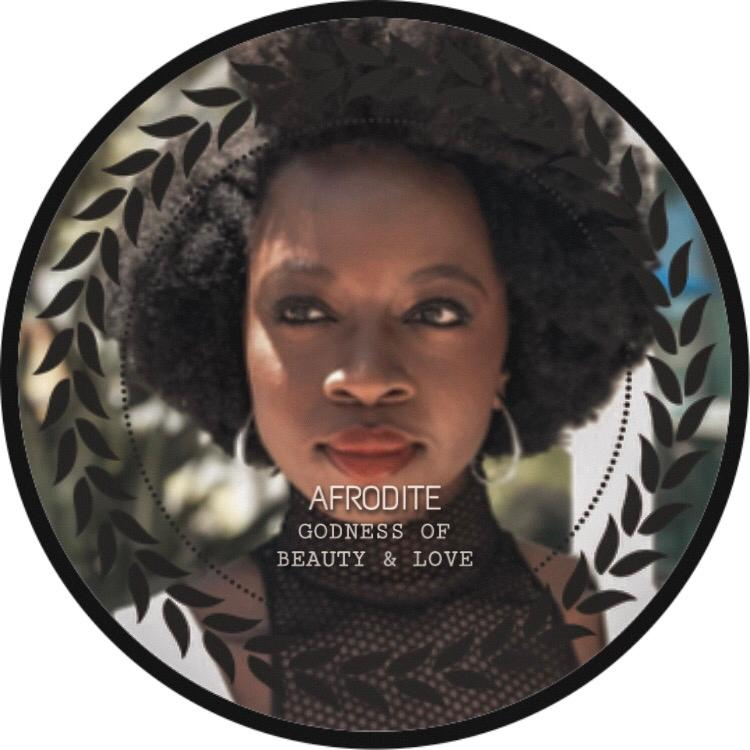
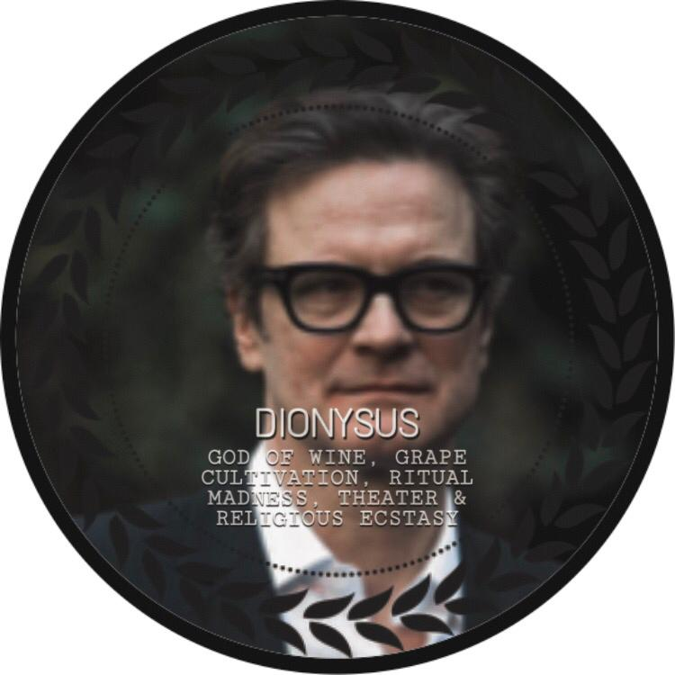
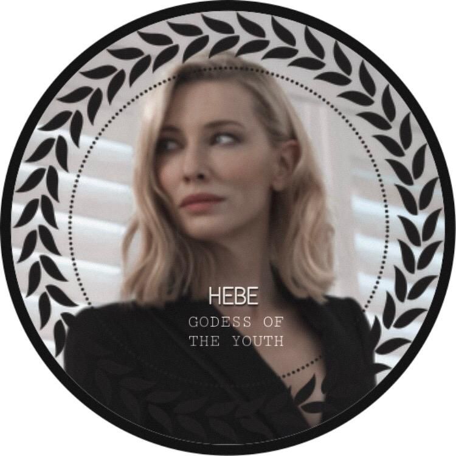
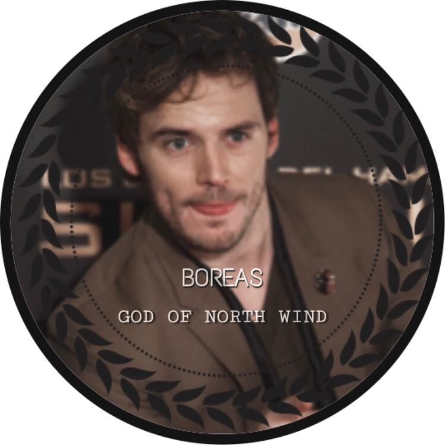
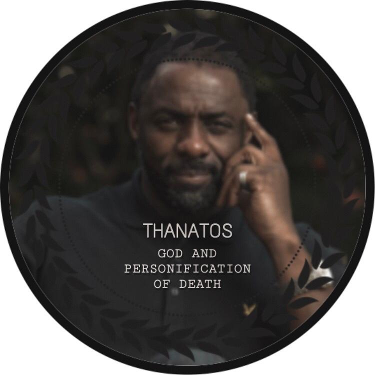
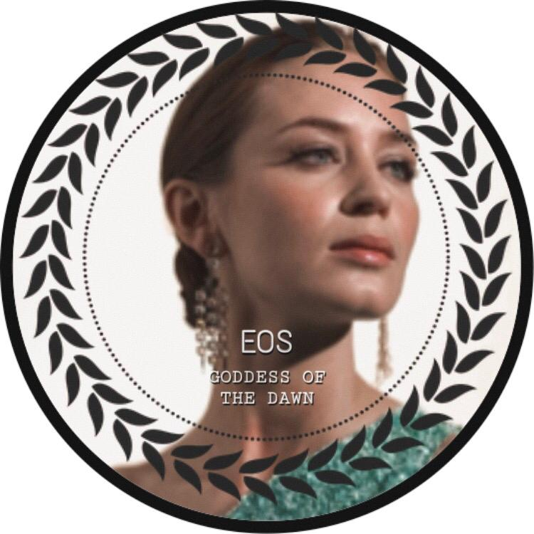

CHALÉS

Chalé 1: Zeus
O chalé é descrito como uma grande caixa de
mármore branco, com colunas pesadas na frente.
Tem portas de bronze polido, que, dependendo de
onde se vê, parece que são atravessadas por raios.
Tem camas suspensas nas paredes, um mosaico no
teto, com nuvens nubladas e raios dourados cortando-as.

Chalé 2: Hera
O chalé grande, feito de mármore branco e ornado com delicadas
colunas, encimadas por romãs e flores. As paredes são entalhadas
com desenhos de pavões. (É um chalé honorário, pois se Hera não
tivesse um, ficaria zangada, e porque ela é a deusa do casamento,
não tem filhos com humanos, somente com Zeus).

Chalé 3: Poseidon
O Chalé de Poseidon é baixo, longo e sólido, com todas
as janelas de frente para o mar. As paredes exteriores são
de pedra cinzenta áspera com pedaços de conchas e coral e
parecido com o fundo do oceano. No interior há seis beliches
vazios e as paredes brilham como abalone.

Chalé 4: Démeter
O chalé é feito de um mármore escuro e amarronzado, possui
tomateiros nas paredes e uma cobertura feita de grama de verdade.
Árvores das mais variadas frutas circundam o chalé, seu galhos
entrando pelas janelas quase sempre abertas. Tem uma grande árvore
(carvalho), no meio do chalé.

Chalé 5: Ares
O chalé é de um vermelho-vivo mal pintado, tem seu
telhado forrado de arame farpado, com uma cabeça de
javali empalhada acima da porta central. Espadas e
facões foram entalhados no mármore escuro e decoram
as paredes do lugar. Quase sempre pode se ouvir rock
de dentro do chalé.

Chalé 6: Atena
O chalé possui mármore pálido e branco, ornado
com grossas colunas torcidas em tranças e
galhos da enorme oliveira que fica á oeste do lugar.
Possui brilho fraco durante qualquer período do dia,
e as paredes interiores são atravancadas de livros.
Tem uma coruja entalhada na frente, com olhos de ônix.

Chalé 7: Apolo
O chalé parece que é de ouro sólido, há um arco dourado na parte
da frente e o lugar brilha fortemente durante o dia, que chega a
doer os olhos. As paredes foram talhadas com milhares de notas
musicais, sobressaindo-se a clave de sol. Tem flores da ilha de
Delfos, que só cresce nesse chalé.

Chalé 8: Ártemis
Um chalé de acampamento aparentemente normal durante o dia, mas
que possui um fulgor prateado no escuro. Imagens de animais e
lanças enfeitam as paredes. O chalé é usado quando as Caçadoras
precisam de um lugar seguro para ficar enquanto Ártemis faz caçadas
perigosas.

Chalé 9: Hefesto
Um chalé negro, com chaminés no telhado. É frequente o
barulho de ferro contra pedra lá dentro. Parece ter apenas
um andar por fora, mas por dentro foi totalmente equipado
tendo-se conhecimento de dois andares e vários tuneis, e
uma enorme forja.

Chalé 10: Afrodite
Um chalé rosa pastel, com cristais pendendo das janelas.
Há vários canteiros de rosas - sem espinhos - das mais variadas
cores por perto, e estas aninham-se nas paredes. Um perfume
suave e adocicado está por toda a parte, tem vários espelhos.

Chalé 11: Hermes
Um chalé velho, com a pintura descascando
e um caduceu - muito confundido com o símbolo da medicina, porém
o de Hermes tem duas cobras- acima da porta. É
o mais lotado, pois além dos filhos de Hermes, lá também dormem
meio-sangues indeterminados.

Chalé 12: Dionísio
O chalé cor de vinho, escuro, com desenhos de parreiras por
toda a parte, tem um mini freezer com diet coke, e variados
tipos de comida, uma estátua de Dionísio em mármore e olhos
de ametista no meio do chalé, (e um lugar para guardar "apetrechos de festas").

Chalé 13: Hades
O chalé de Hades é feito de obsidiana, com colunas pesadas
e sem janelas. Cada etapa é enfeitada por caveiras. Na frente
do chalé há uma tocha onde queima fogo grego 24 horas por dia.
Dentro tudo é escuro e frio, há também um altar para comunicar-se
com Hades ou espíritos. Há também estante de livros e mapas do submundo.

Chalé 14: íris
O Chalé com várias cores enfeitadas em suas paredes externas.
Dependendo da posição do sol, é possível enxergar vários arco-íris.
Todas as janelas possuem poças d'água para mostrar um arco-íris em cada uma
e sendo assim, facilitar a comunicação.

Chalé 15: Hipnos
Parece uma casa de campo antiquada com paredes e um telhado ímpeto.
Um fogo vivo estala na lareira. Sobre a cornija pende um ramo de árvore, cada
galho pingando líquido branco numa coleção de vasos de estanho. Uma música
suave de violino toca de algum lugar. Tem camas confortáveis e macias, acredita-se
que sempre há leite quente disponível.

Chalé 16: Nêmesis
Chalé de cor marrom escuro, colunas de pedra obsidiana com uma
estátua de uma balança equilibrada em cima. Na entrada tem uma
roda quebrada, o símbolo de Nêmesis. Ethan Nakamura foi o único
filho de Nêmesis, porém não chegou a ver a construção de seu chalé.

Chalé 17: Nice
Na entrada de seu chalé, tem uma estátua da deusa, alada e com
asas abertas, seu símbolo de vitória. O edifício é de tamanho
médio, quase do tamanho de um pequeno sobrado. As paredes são
de mármore branco com algumas colunas jônicas na frente, onde
há uma pequena varanda.

Chalé 18: Hebe
Hebe, deusa da Juventude florida, seu chalé é florido em seu
interior, e pintado de verde claro em seu exterior. Possui
estaturas diversificadas espalhadas pelo local, representando
a Juventude. Possuí pomares de maças ao seu redor.

Chalé 19: Tique
O chalé é uma miniatura do cassino de Las Vegas. Tem várias
Mesas de jogos de azar, (baralho, poker...), Camas no fundo
do chalé e uma fonte para fazer pedidos.

Chalé 20: Hecáte
O chalé é feito de pedras marcadas com runas e símbolos
mágicos e detalhes roxos e símbolos dourados. Não há janelas,
tem vários caldeirões, livros de magia, poções variadas e gritos
horripilantes vindos de dentro do chalé.

Chalé 21: Eolo
Chalé feito com cubos de gelo por fora, sempre venta no local,
por dentro há uma televisão para assistir ao "CTO!". De vez em
quando cai um furacão sobre o chalé. De fora escurece.Tem camas
suspensas e correntes de ar vindas de algum lugar do chalé.

Chalé 22: Perséfone
O chalé tem duas partes; uma é toda enfeitada, cheia de flores
por fora e por dentro, e aparece no tempo que Perséfone está com
Deméter, sua mãe tão amada; na outra há neve, gelo e terra seca que aparece quando
ela está com Hades, evidenciando a ideia de como ela é triste com seu rei do
submundo.

Chalé 23: Bóreas
O chalé é cinza e possui colunas com marcas dos quatro cantos do mundo, e também marcas
fazendo simbologia ao deus Bóreas. Dentro as paredes são de cal branco com desenhos dos ventos
há também um armário cheio de mapas de como encontrar os ventos e ao lado cheio de
armas de gelo inquebráveis.

Chalé 24: Melinoe
A estrutura lembrava a de uma sela de prisão, só que mais limpa e mais
ajeitada. As beliches de madeira ficavam encostadas nas paredes, deixando
um bom espaço no centro do chalé, o qual confortava alguns sofás. O vento
frio entrava pelas janelas arejadas. Diziam que se podia ouvir sons de
correntes sendo arrastadas, uivos e até mesmo sussurros alheios ao ficar
tempo demais no local.

Chalé 25: Macária
É cercado por mata silvestre e flores. É bem simples e rustico pra
quem olha por fora, Todavia, assim que se pisa em seu interior, pode-se
observar uma sala ampla e silenciosa - móveis negros como o Hades e
cortinas estampadas de flores, assim como a primavera. Os quartos são
mobilhados com móveis igualmente negros, com carpetes coloridos, dessa
forma os cômodos satisfazem tanto os que tem tendencia a morte.

Chalé 26: Thânatos
Feito de mármore negro e pedras preciosas (predominasse o ouro), o chalé de
Thânatos tem formato circular e aparenta ser bem rustico, tem uma porta de
ferro interior do chalé é escuro e sombrio,tochas de fogo grego enfeitam as
paredes,e uma estatua do deus em forma alada brilha durante a noite.

Chalé 27: Nix
Chalé de mármore negro, que ao anoitecer ganha um brilho profundo capaz de
cegar ate as corujas. O interior do chalé é formado por beliches, guarda-roupas,
baús e etc. A névoa é muito comum nesse chalé, os filhos de Nix, assim como os
filhos de Hécate podem manipular a Névoa, armas de ferro estígio são guardadas
em uma sala dentro do chalé.

Chalé 28: Eros
Um grande bloco de mármore, com desenhos de corações dourados e flechas, e
várias rosas vermelhas e brancas envoltas ao chalé. Na entrada há um grande
coração vermelho, que parece estar a bater e uma flecha no meio. É cercado por
pombos, símbolo de Eros. Todo o chalé é envolto a um cheiro doce e convidativo.
No seu interior tem uma sala espaçosa, com colunas gregas, todos os móveis são
brancos, assim como o chão.

Chalé 29: Eos
Chalé de ampla construção transmitir um ar luminoso - literal e figuradamente
falando. As paredes são feitas de mármore polido que brilham em tons de dourado
e alaranjado, principalmente durante a manhã e tarde. No topo, Lampus e Phaethon -
os pégasos da deusa do amanhecer - podem ser vistos entalhados, um olhando para a
direita e outro para a esquerda, com um reluzente sol entre eles.
Chalé 30: Quione
O chalé de Quione é como uma fortaleza branca, com pilares feitos de cristal bem
detalhado e com neve no telhado. Quem se aproxima cerca de cinco metros do chalé
já sente um frio ártico. Com a aceitação dos outros deuses superiores, o chalé de
Quione é um dos mais vazios, já que a deusa da neve não se relaciona muito com mortais.

Chalé 31: Érebo
O chalé para os filhos de Érebo por fora é com janelas reflexivas negras,
algumas tochas que viviam acesas com chamas negras que pareciam sugar a luz ao
redor por nunca se apagarem. Na porta do chalé há um véu negro que de longe se
parece com um portal negro.

Chalé 32: Deimos
Um chalé bastante sinistro e tenso. Existia várias armas presas em guinchos na
parede, como maças, lanças, escudos. No chão, um grande tapete cor de vermelho
sangue fresco, e as camas todas com lençóis pretos e travesseiros brancos. O chalé
era bem arejado pois tinha várias janelas, uma grande porta de madeira encontrava-se
na frente, com uma armadilha mágica, ela só deixa passar proles de Deimos ou pessoas
autorizadas pelas mesmas.

Chalé 33: Fobos
O chalé de Phobos é bem assustador, porém é bonito ao seu estilo, feitos com tijolinhos
marrons, pretos e desbotados, o chalé possui dois andares, seu telhado já foi marrom
claro, mas hoje em dia está mais para um preto e um marrom desbotado, isso também se dá
por causa da sujeira e da velhice, o chalé também tem várias janelas, a maioria estão
cobertas por peircianas marrons, que bloqueiam a visão de dentro do chalé.